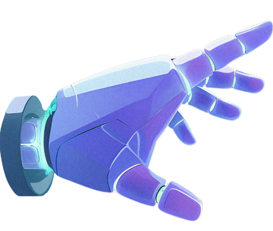

Learn Mathematics Inside Robotic Arm
Simple, fully visualized
Pilih yang ingin dikerjakan. Simulation untuk belajar dan mencoba tanpa robot, Settings untuk tampilan dan koneksi, Start Control untuk menyambung model 3D ZU5 ke robot asli.
Keselamatan: sebelum menggerakkan robot nyata, pastikan area kerja kosong dan satu orang memegang tombol emergency stop fisik. Tombol STOP di aplikasi hanya pelengkap.
| x | - | rx | - |
| y | - | ry | - |
| z | - | rz | - |
| Sendi | Sudut (°) | Arus (A) | Tegangan (V) | Suhu (°C) | Torsi (N·m) |
|---|
Semua fitur ditampilkan sebagai ikon. Mulai tur interaktif untuk dipandu langkah demi langkah, atau lihat arti setiap ikon di kamus di bawah. Arahkan kursor ke ikon mana pun untuk melihat namanya.
Pilih model yang dipakai di Robot Arm Simulation, atau tambahkan model sendiri dari tabel DH. Mesh STL atau OBJ diunggah per link dan harus dinyatakan dalam frame DH link tersebut. Tanpa mesh, tubuh robot dibangkitkan dari parameter DH. Start Control tetap khusus robot JAKA ZU5 sungguhan.
Alat bantu belajar kinematika robot 6-DOF: dari vektor dan rotasi sampai forward/inverse kinematics, torsi, dan energi.
Semua yang kita hitung pada akhirnya adalah posisi titik dalam ruang 3D, yang direpresentasikan sebagai vektor kolom (x, y, z). End-effector robot adalah satu titik; setiap sendi juga punya "titik asal" (origin) dan tiga arah sumbu miliknya sendiri, yang disebut frame lokal.
Operasi vektor penting:
Matriks adalah susunan bilangan dalam baris dan kolom. Dalam robotika, matriks digunakan untuk merepresentasikan rotasi, translasi, dan transformasi dalam satu operasi perkalian.
Translasi adalah pergeseran posisi tanpa mengubah orientasi. Dalam ruang 3D, translasi didefinisikan oleh vektor perpindahan (dx, dy, dz).
Rotasi murni di sekitar satu sumbu direpresentasikan matriks rotasi 3×3. Sifat penting: RT = R-1 (ortogonal) dan det(R) = 1.
Dua rotasi berturut-turut digabung dengan perkalian matriks. Untuk rotasi terhadap frame tetap (sumbu dunia), rotasi yang dilakukan belakangan dikalikan dari kiri; untuk rotasi terhadap frame yang sedang bergerak (sumbu lokal), dikalikan dari kanan.
Supaya rotasi dan translasi bisa digabung jadi satu perkalian matriks, kita "membungkus" keduanya ke dalam matriks 4×4:
DH adalah resep standar untuk berpindah dari frame sendi (i-1) ke frame sendi (i) menggunakan 4 gerakan berurutan:
Menyamakan arah sumbu x agar sejajar dengan frame berikutnya.
Menggerakkan titik asal sepanjang sumbu putar sendi sebelumnya.
Menggerakkan titik asal sepanjang panjang link.
Menyamakan kemiringan sumbu z agar sejajar dengan sumbu putar sendi berikutnya.
Setelah matriks DH tiap sendi didapat, FK tinggal mengalikan berurutan dari base ke end-effector:
IK membalik arah FK: input posisi target, cari sudut sendi. Karena hubungan θ → posisi non-linear, perlu pendekatan numerik:
Judul: Implementasi pengukuran konsumsi energi dan torsi motor pada robotic manipulator JAKA ZU5 (6-DOF) dengan variasi payload 1, 3, dan 5 kg.
Simulator ini adalah alat bantu belajar dan presentasi, bukan pengganti simulasi MATLAB/Simulink dan SolidWorks yang menjadi deliverable resmi. Model dinamika robot (M, C, G) tidak termasuk scope proyek, jadi simulator tidak membuat klaim stabilitas dan hanya menampilkan peringatan indikatif.
Tujuan: satu diagram sistem yang disepakati tim beserta persamaan tiap blok, sebagai acuan tunggal untuk step berikutnya.
| Blok | Persamaan | Input → output |
|---|---|---|
| Trajectory generator | Ditentukan profil lintasan (Step 2.5) | → x, y, z, ẋ, ẏ, ż, ẍ, ÿ, z̈ |
| Inverse Kinematics | \( \theta = \mathrm{IK}(x,y,z),\ \dot\theta = J^{-1}\dot x \) | x,y,z → θ₁...θ₆ |
| Eksekusi joint | Asumsi tracking ideal (tanpa PID dan dinamika) | θ target → θ aktual |
| Forward Kinematics | \( T_6^0 = T_1^0 T_2^1 \cdots T_6^5 \) | θ₁...θ₆ → x,y,z |
| Torsi dari arus | \( \tau_i = K_i\, i_i \) | arus per joint → τ per joint |
Aturan: sumbu Zᵢ searah sumbu rotasi joint i+1; origin di titik potong garis normal Zᵢ₋₁ dan Zᵢ; sumbu Xᵢ searah garis normal tersebut. Nilai di bawah adalah nilai aktif simulator (satuan meter dan derajat). Nilai awalnya diturunkan dari geometri file STEP resmi JAKA ZU5 pada pose nol; nol dan arah putar sendi mengikuti pose STEP, belum tentu sama dengan konvensi controller. Ubah lewat JAKA Simulation, mode Blok Diagram, upside bar tab Parameter robot.
| Joint | θ (variabel) | d (m) | a (m) | α (°) | Keterangan |
|---|
Untuk 6-DOF dengan spherical wrist (sumbu joint 4, 5, 6 berpotongan di satu titik) dipakai geometric decoupling: posisi diselesaikan oleh joint 1 sampai 3 (mencari wrist center) dan orientasi oleh joint 4 sampai 6. Jika bukan spherical wrist, dipakai metode numerik lewat Jacobian. Simulator memakai metode numerik damped least squares:
Bagian ini mendampingi menu Draw di JAKA Simulation. Di sana tiap parameter DH digambar langsung pada robot (Axis Draw), dan angka pada langkah di bawah dihitung untuk target yang kamu isi.
Empat parameter DH per sendi (konvensi DH standar, sama dengan tabel 2.1). Dari frame i-1 ke frame i dilakukan empat gerakan berurutan: putar θᵢ terhadap sumbu Zᵢ₋₁, geser dᵢ sepanjang Zᵢ₋₁, geser aᵢ sepanjang Xᵢ, lalu putar αᵢ terhadap Xᵢ. Hanya θᵢ yang berubah saat sendi putar bergerak; dᵢ, aᵢ, dan αᵢ adalah ukuran bentuk robot, jadi nilainya tetap untuk pose apa pun.
Dari FK ke IK. FK mengalikan keenam matriks untuk mendapat pose end-effector. IK membalik arahnya: pose target diketahui, lalu persamaan matriks itu dibongkar untuk mendapat sudutnya. Pada JAKA ZU5 sumbu sendi 2, 3, dan 4 sejajar (α₂ = α₃ = 0), sehingga pembongkaran bisa dilakukan dengan geometri dan menghasilkan rumus tertutup.
Rumus tertutup ini hanya berlaku untuk struktur DH bawaan (α = 90°, 0°, 0°, 90°, 90°, 180° dan a₁ = a₄ = a₅ = a₆ = 0). Bila tabel DH diubah di luar pola itu, pakai IK numerik di menu IK. Menu Draw selalu memeriksa hasilnya dengan FK dan menampilkan galatnya.
Bacaan lanjut: J. J. Craig, Introduction to Robotics: Mechanics and Control, bab 3 dan 4. M. W. Spong, S. Hutchinson, M. Vidyasagar, Robot Modeling and Control, bab 3. B. Siciliano dkk., Robotics: Modelling, Planning and Control, bab 2. K. P. Hawkins, Analytic Inverse Kinematics for the Universal Robots UR-5/UR-10 Arms, Georgia Institute of Technology, 2013 (lengan dengan tiga sumbu sejajar seperti JAKA ZU5).
Pada pose singular, determinan Jacobian mendekati nol sehingga J tidak dapat dibalik: sebagian arah gerak end-effector tidak bisa dihasilkan, dan solusi IK menuntut kecepatan sendi yang sangat besar. Contoh: lengan lurus penuh (pose nol simulator) berada di singularitas siku. Damped least squares meredam masalah ini tetapi mengorbankan ketelitian; sebutkan ini sebagai limitasi metode di laporan.
Agar keenam joint tiba bersamaan, durasi dipilih dari joint yang paling lambat, lalu tiap joint memakai polinomial orde lima (quintic). Catatan: bentuk \( T=\max(\Delta\theta_i/\dot\theta_{i,max}) \) di Referensi Teknis hanya berlaku untuk profil kecepatan konstan; dengan quintic, kecepatan puncaknya 1,875 kali kecepatan rata-rata, sehingga durasi harus dikali 1,875 agar batas kecepatan sendi tidak terlampaui (lihat penurunan di bawah).
Enam koefisien ditentukan oleh enam kondisi: \( \theta(0)=\theta_0,\ \theta(T)=\theta_f,\ \dot\theta(0)=\dot\theta(T)=0,\ \ddot\theta(0)=\ddot\theta(T)=0 \).
Dengan \( \tau = t/T \) dan \( \Delta\theta=\theta_f-\theta_0 \), tiga kondisi awal memberi \( a_0=\theta_0,\ a_1=0,\ a_2=0 \).
Tiga kondisi di \( \tau=1 \) menghasilkan sistem linear untuk \( a_3, a_4, a_5 \) dengan solusi berikut.
Turunan pertama bernilai maksimum di \( \tau=0{,}5 \): \( \dot\theta_{max} = 1{,}875\,\Delta\theta / T \). Karena itu simulator memakai \( T \ge 1{,}875\,\Delta\theta_i/\dot\theta_{i,max} \) untuk tiap joint. Alternatif lain adalah profil kecepatan trapezoidal.
Mengikuti penjelasan dosen (elektrik, mekanik, potensial, dan energi yang melibatkan gaya lawan), dashboard menghitung hanya jenis yang punya rumus valid dan parameter yang jelas:
| Jenis | Rumus | Catatan |
|---|---|---|
| Elektrik | \( P_e = V\sum|i_i|,\ E_e=\int P_e\,dt \) | Tegangan bus V masih placeholder |
| Mekanik | \( P_m = \sum \tau_i\dot\theta_i,\ E_m=\int P_m\,dt \) | Bertanda; pada siklus tertutup mendekati nol |
| Mekanik (absolut) | \( P_a = \sum|\tau_i\dot\theta_i|,\ E_a=\int P_a\,dt \) | Usaha total tanpa saling meniadakan |
| Gaya lawan (gesekan) | \( P_f = \sum (b_i\dot\theta_i^2 + c_i|\dot\theta_i|) \) | Koefisien default 0 (belum ada data) |
| Potensial | \( E_p = \sum m_k g\, h_k + m_{payload}\, g\, h_{EE} \) | Massa link adalah estimasi dari volume mesh |
| Kinetik / inersia | butuh model inersia M(q) | Di luar scope, belum tersedia |
Payload uncertainty adalah ketidakpastian massa dan pusat massa beban yang dibawa end-effector; nilai yang keliru mengubah torsi gravitasi tiap joint. Proyek memakai payload 1, 3, dan 5 kg sebagai label skenario, dan simulator menampilkannya sebagai balok yang dapat dipasang di end-effector. Balok tidak mengubah kinematika (posisi dan sudut), tetapi menambah torsi statis gravitasi dan energi potensial.
Klik tautan pada tiap istilah untuk melompat ke penjelasannya.
Didefinisikan oleh magnitude (panjang) dan arah. Dalam 3D, ditulis sebagai (x, y, z). Operasi: penjumlahan, dot product, cross product.
konsep dasar lihat penjelasanSusunan m×n bilangan dalam baris dan kolom. Dalam robotika, matriks 3×3 untuk rotasi, 4×4 untuk transformasi homogen.
konsep dasar lihat penjelasanMemindahkan titik tanpa mengubah orientasi. Diwakili vektor perpindahan (dx, dy, dz). Dalam matriks homogen, masuk kolom terakhir.
operasi lihat penjelasanMengubah orientasi tanpa mengubah posisi origin. Matriks rotasi 3×3 bersifat ortogonal: RT = R-1.
operasi lihat penjelasanOperasi gabungan yang mengubah posisi dan orientasi sekaligus. Dikemas dalam matriks homogen 4×4.
operasi lihat penjelasanA·B = ‖A‖‖B‖cos θ. Hasilnya skalar. Dipakai untuk mengukur kesegarisan dua vektor dan menghitung sudut.
operasi vektor lihat penjelasanVariabel yang berubah saat robot bergerak. Pada sendi revolute (putar), q sama dengan θ. Ada 6 untuk robot 6-DOF seperti JAKA ZU5.
berubah-ubah lihat penjelasanParameter DH. Untuk sendi revolute, inilah variabel gerak (θᵢ = qᵢ). Diatur lewat slider di kalkulator FK.
berubah-ubah lihat penjelasanJarak antar frame diukur sepanjang sumbu putar sendi sebelumnya. Untuk sendi revolute biasanya konstan.
biasanya tetap lihat penjelasanJarak fisik antara sumbu zᵢ₋₁ dan zᵢ. Murni ukuran fisik robot, didapat dari datasheet atau pengukuran.
tetap lihat penjelasanSeberapa miring arah zᵢ dibanding zᵢ₋₁, diukur mengelilingi xᵢ. Biasanya 0°, +90°, atau -90°.
tetap lihat penjelasanBukan parameter DH, melainkan hasil dari FK (posisi end-effector) atau input dari IK (target). Selalu relatif terhadap frame acuan.
hasil / input lihat penjelasanDari sudut joint θ₁...θ₆ menghitung posisi dan orientasi end-effector (x, y, z).
lihat penjelasanKebalikan FK: dari posisi target mencari sudut joint. Pada diagram dosen, namanya tertukar dengan FK.
catatan penamaan lihat penjelasanθ rotasi terhadap Z (variabel sendi putar), d geser sepanjang Z, a panjang link sepanjang X, α twist terhadap X.
lihat tabel DHPose ketika Jacobian tidak dapat dibalik sehingga sebagian arah gerak hilang.
lihat penjelasanFaktor pengubah arus motor menjadi torsi; N ikut memuat rasio gearbox bila perlu.
lihat penjelasanBila sumbu joint 4, 5, 6 berpotongan, posisi dan orientasi dapat diselesaikan terpisah.
lihat penjelasanSinkronisasi enam joint dengan polinomial orde lima berkecepatan dan percepatan nol di ujung.
lihat penjelasanKetidakpastian massa dan pusat massa beban yang memengaruhi torsi gravitasi.
lihat penjelasanElektrik, mekanik, potensial, dan gaya lawan (gesekan) sesuai penjelasan dosen.
lihat penjelasanTorsi penahan beban akibat gravitasi pada pose tertentu, tanpa efek inersia.
lihat penjelasanUrutan gerak mendekati, mengambil, memindahkan, dan melepas benda.
lihat cara memakaiManipulasi dua vektor posisi di ruang 3D dan amati bagaimana dot product merepresentasikan proyeksi geometris serta sudut antar vektor.
Lihat dari atas sumbu Z: sumbu X dan Y jadi bidang 2D biasa. Sudut sebuah vektor terhadap sumbu X positif menentukan kuadrannya, dan dari situlah tanda sin/cos vektor tersebut berasal.
Pilih sumbu rotasi dan amati bagaimana frame lokal O-UVW berputar terhadap frame dunia O-XYZ.
Bayangkan mata Anda diletakkan tepat di sumbu rotasi lalu melihat ke arah bidang tegak lurusnya, dua sumbu yang tersisa jadi terlihat 2D seperti bidang XY biasa. Dari sudut pandang inilah tanda sin dan cos pada matriks rotasi berasal.
Bukti visual: perkalian matriks rotasi tidak komutatif. Memutar X lalu Z ≠ Z lalu X.
4 parameter DH (θ, d, a, α) menghasilkan satu matriks transformasi 4×4 dari frame sendi ke frame sendi berikutnya.
Rantai kinematik 3D: setiap sendi bisa berotasi di sumbu X, Y, atau Z. Pilih sumbu per sendi untuk melihat pergerakan 3D (termasuk naik/turun).
| frame | x | y | z |
|---|
| joint | a | α (deg) | d |
|---|
Jacobian geometrik 6×6 di frame base DH (Z ke atas). Tiga baris atas: kecepatan linear end-effector per joint (m/rad); tiga baris bawah: sumbu putar joint. Berubah saat slider sudut digeser. Pilih kolom untuk melihat perhitungan langkah demi langkah.
| frame | x | y | z |
|---|
Baris baru tiap 0,25 detik selama robot bergerak (terbaru di atas). Centang kolom yang ingin ditampilkan.
Parameter di bawah ini mendefinisikan geometri (DH, satuan meter & derajat), massa, dan payload robot yang dipakai di seluruh tab kalkulator FK/IK. Nilai DH awal diturunkan dari geometri file STEP resmi JAKA ZU5 pada pose nol. Mesh 3D memakai frame yang sama, jadi mengubah DH mengubah kinematika (FK/IK) tetapi tidak menggeser bentuk mesh.
| joint | θ min (°) | θ max (°) | d | a | α (deg) |
|---|
Sumber torsi dipilih di bar trajectory mode FK/IK: estimasi gravitasi atau arus input. K, N, dan i adalah input (placeholder, belum dari datasheet servo JAKA). K = konstanta torsi (N·m/A), N = rasio gearbox (isi 1 bila K sudah dihitung di sisi sendi), i = arus (A). Simulator tidak memprediksi arus dari dinamika robot; nanti bisa diganti data arus terukur. Energi dihitung dari τ dan kecepatan sendi hasil gerakan slider (daya mekanik, bertanda: negatif bila τ melawan gerak).
| joint | K (N·m/A) | N | i (A) |
|---|
Animasi robot tetap berjalan di belakang; data diperbarui 10 kali per detik. K, N, i per joint diubah di akordeon "Torsi & Energi" di atas; payload di tab Parameter robot. Semua nilai parameter masih placeholder/estimasi.
| Jenis | Besaran & rumus | Nilai sekarang | Akumulasi |
|---|---|---|---|
| Elektrik | Pe = V·Σ|iᵢ| (W) ; Ee = ∫Pe dt | 0 W | 0 J |
| Mekanik | Pm = Στᵢθ̇ᵢ (W) ; Em = ∫Pm dt | 0 W | 0 J |
| Mekanik (usaha absolut) | Pa = Σ|τᵢθ̇ᵢ| ; Ea = ∫Pa dt (tidak saling meniadakan) | 0 W | 0 J |
| Gaya lawan (gesekan) | Pf = Σ(bᵢθ̇ᵢ² + cᵢ|θ̇ᵢ|) ; Ef = ∫Pf dt | 0 W | 0 J |
| Potensial | Ep = Σ mᵢ·g·hᵢ + mpayload·g·hEE (h dari bidang base) | 0 J | Δ 0 J |
| ↳ rincian potensial | link / payload | 0 J | 0 J |
| Kinetik / inersia | butuh model inersia M(q); di luar scope proyek saat ini | n/a | n/a |
Definisi pasti "E_mekanik vs E_inersia" dari dosen belum dikonfirmasi (lihat checklist di Referensi Teknis). Jenis-jenis di atas adalah tafsiran sementara; τ berasal dari input K·N·i, jadi keseimbangan energi antar jenis tidak diverifikasi.
| joint | massa link (kg) | b viskos (N·m·s/rad) | c Coulomb (N·m) | τ rated (N·m) |
|---|
Massa link = estimasi kasar (massa total dibagi menurut volume mesh STEP, kerapatan seragam). Koefisien gesekan default 0 (belum ada data). Kapasitas torsi (rated) adalah placeholder; isi dari datasheet servo JAKA agar peringatan bermakna.
Diagram blok dibuka sebagai pop-up di atas tampilan robot, supaya robot 3D tetap lega. Robot tetap bergerak selama pop-up terbuka.
Klik blok untuk melihat rumusnya di sebelah kanan; seret blok untuk memindah. Buat sambungan: klik titik keluaran (kanan blok) lalu titik masukan (kiri blok). Klik garis untuk menghapus sambungan.
| sendi | θ (variabel) | d (m) | a (m) | α (°) |
|---|
Geser slider sudut di bawah: hanya kolom θ yang berubah. Nilai d, a, dan α adalah ukuran bentuk robot, jadi tetap untuk pose apa pun. Parameter bernilai 0 tidak digambar di 3D.
Arah kebalikan dari FK: pose target end-effector diketahui, yang dicari sudut tiap sendi. Karena sumbu sendi 2, 3, dan 4 JAKA ZU5 sejajar, sudutnya bisa diturunkan langsung dari matriks transformasi, tanpa iterasi. Hasilnya sampai 8 kombinasi sudut untuk satu pose.
Apakah kamu mau keluar?